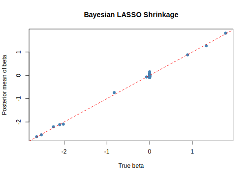

12.2 Regularization
In this century, the amount of available data continues to grow. This means we have access to more covariates for prediction, and we can also generate additional inputs to enhance the predictive power of our models. As a result, we often encounter wide datasets, where the number of inputs may exceed the number of observations. Even in modest settings, we might have hundreds of inputs, and we can use them to identify which ones contribute to accurate predictions. However, we generally avoid using all inputs at once due to the risk of overfitting. Thus, we require a class of input selection or regularization.
In the standard linear regression setting,
\[ \mathbf{y} = \mathbf{i}_N \beta_0 + \mathbf{W}\boldsymbol{\beta} + \boldsymbol{\mu}, \]
where \(\mathbf{i}_N\) is an \(N\)-dimensional vector of ones, \(\mathbf{W}\) is the \(N \times K\) design matrix of inputs, and \(\boldsymbol{\mu} \sim \mathcal{N}(\mathbf{0}, \sigma^2 \mathbf{I}_N)\), there has been extensive development of techniques aimed at regularization within the Frequentist inferential framework. These include methods such as Ridge regression (Hoerl and Kennard 1970); discrete subset selection techniques like best subset selection (Furnival and Wilson 1974a), forward selection, and backward stepwise selection (Hastie, Tibshirani, and Friedman 2009); as well as continuous subset selection approaches such as the LASSO (Tibshirani 1996), the elastic net (Zou and Hastie 2005), and OSCAR (Bondell and Reich 2008).
It is important to note, however, that Ridge regression does not perform variable selection; rather, it shrinks coefficient estimates toward zero without setting them exactly to zero.
Ridge regression and the LASSO can be viewed as special cases of a more general class of estimators known as Bridge regression (Fu 1998), which also admits a Bayesian interpretation. Consider the following penalized least squares criterion in the linear regression setting:
\[ \hat{\boldsymbol{\beta}}^{\text{Bridge}} = \arg\min_{\boldsymbol{\beta}} \left\{ \sum_{i=1}^N \left( y_i - \beta_0 - \sum_{k=1}^K \tilde{w}_{ik} \beta_k \right)^2 + \lambda \sum_{k=1}^K |\beta_k|^q \right\}, \quad q \geq 0, \]
where \(\tilde{w}_{ik}\) denotes the standardized inputs. Standardizing inputs is important in variable selection problems to avoid issues caused by differences in scale; otherwise, variables with larger magnitudes will be penalized less and disproportionately influence the regularization path.
Interpreting \(|\beta_k|^q\) as proportional to the negative log-prior density of \(\beta_k\), the penalty shapes the contours of the prior distribution on the parameters. Specifically:
- \(q = 0\) corresponds to best subset selection, where the penalty counts the number of nonzero coefficients.
- \(q = 1\) yields the LASSO, which corresponds to a Laplace (double-exponential) prior.
- \(q = 2\) yields ridge regression, which corresponds to a Gaussian prior.
In this light, best subset selection, the LASSO, and ridge regression can be viewed as maximum a posteriori (MAP) estimators under different priors centered at zero (Park and Casella 2008). However, they are not Bayes estimators in the strict sense, since Bayes estimators are typically defined as the posterior mean. While ridge regression coincides with the posterior mean under a Gaussian prior (Ishwaran and Rao 2005), the LASSO and best subset selection yield posterior modes.
This distinction is important because the Bayesian framework naturally incorporates regularization through the use of proper priors, which helps mitigate overfitting. Specifically, when proper shrinkage priors are used, the posterior balances data likelihood and prior information, thus controlling model complexity.
Furthermore, empirical Bayes methods, where the marginal likelihood is optimized, or cross-validation can be used to estimate the scale parameter of the prior covariance matrix for the regression coefficients. This scale parameter, in turn, determines the strength of regularization in ridge regression.
Note that regularization introduces bias into the parameter estimates because it constrains the model, shrinking the location parameters toward zero. However, it substantially reduces variance, as the estimates are prevented from varying excessively across samples. As a result, the mean squared error (MSE) of the estimates, which equals the sum of the squared bias and the variance, is often lower for regularization methods compared to ordinary least squares (OLS), which remains unbiased under the classical assumptions. This trade-off is particularly important when the goal is to identify causal effects, where unbiasedness may be preferred over predictive accuracy (see Chapter 13).
12.2.1 Bayesian LASSO
Given the popularity of the LASSO as a variable selection technique, we present its Bayesian formulation in this subsection (Park and Casella 2008). The Gibbs sampler for the Bayesian LASSO exploits the representation of the Laplace distribution as a scale mixture of normals. This leads to the following hierarchical representation of the model:
\[ \begin{aligned} \mathbf{y} \mid \beta_0, \boldsymbol{\beta}, \sigma^2, \mathbf{W} &\sim \mathcal{N}(\mathbf{i}_N \beta_0 + \mathbf{W} \boldsymbol{\beta}, \sigma^2 \mathbf{I}_N), \\ \boldsymbol{\beta} \mid \sigma^2, \tau_1^2, \dots, \tau_K^2 &\sim \mathcal{N}(\mathbf{0}_K, \sigma^2 \mathbf{D}_{\tau}), \\ \tau_1^2, \dots, \tau_K^2 &\sim \prod_{k=1}^K \frac{\lambda^2}{2} \exp\left\{ -\frac{\lambda^2}{2} \tau_k^2 \right\}, \\ \sigma^2 &\sim \frac{1}{\sigma^2}, \\ \beta_0 &\sim c, \end{aligned} \]
where \(\mathbf{D}_{\tau} = \operatorname{diag}(\tau_1^2, \dots, \tau_K^2)\) and \(c\) is a constant.
After integrating out \(\tau_1^2, \dots, \tau_K^2\), the conditional prior of \(\boldsymbol{\beta} \mid \sigma^2\) is:
\[ \pi(\boldsymbol{\beta} \mid \sigma^2) = \prod_{k=1}^K \frac{\lambda}{2 \sqrt{\sigma^2}} \exp\left\{ -\frac{\lambda}{\sqrt{\sigma^2}} |\beta_k| \right\}, \]
which implies that the log-prior is proportional to \(\lambda \sum_{k=1}^K |\beta_k|\), matching the penalty term in the LASSO optimization problem.
The conditional posterior distributions for the Gibbs sampler are (Park and Casella 2008):
\[ \begin{aligned} \boldsymbol{\beta} \mid \sigma^2, \tau_1^2, \dots, \tau_K^2, \tilde{\mathbf{W}}, \tilde{\mathbf{y}} &\sim \mathcal{N}(\boldsymbol{\beta}_n, \sigma^2 \mathbf{B}_n), \\ \sigma^2 \mid \boldsymbol{\beta}, \tau_1^2, \dots, \tau_K^2, \tilde{\mathbf{W}}, \tilde{\mathbf{y}} &\sim \text{Inverse-Gamma}(\alpha_n/2, \delta_n/2), \\ 1/\tau_k^2 \mid \boldsymbol{\beta}, \sigma^2 &\sim \text{Inverse-Gaussian}(\mu_{kn}, \lambda_n), \\ \beta_0 \mid \sigma^2, \tilde{\mathbf{W}}, \tilde{\mathbf{y}} &\sim \mathcal{N}(\bar{y}, \sigma^2 / N), \end{aligned} \]
where:
\[ \begin{aligned} \boldsymbol{\beta}_n &= \mathbf{B}_n \tilde{\mathbf{W}}^{\top} \tilde{\mathbf{y}}, \\ \mathbf{B}_n &= \left( \tilde{\mathbf{W}}^{\top} \tilde{\mathbf{W}} + \mathbf{D}_{\tau}^{-1} \right)^{-1}, \\ \alpha_n &= (N - 1) + K, \\ \delta_n &= (\tilde{\mathbf{y}} - \tilde{\mathbf{W}} \boldsymbol{\beta})^{\top} (\tilde{\mathbf{y}} - \tilde{\mathbf{W}} \boldsymbol{\beta}) + \boldsymbol{\beta}^{\top} \mathbf{D}_{\tau}^{-1} \boldsymbol{\beta}, \\ \mu_{kn} &= \sqrt{ \frac{ \lambda^2 \sigma^2 }{ \beta_k^2 } }, \\ \lambda_n &= \lambda^2, \end{aligned} \]
and \(\tilde{\mathbf{W}}\) is the matrix of standardized inputs, and \(\tilde{\mathbf{y}}\) is the centered response vector.
Note that the posterior distribution of \(\boldsymbol{\tau}\) depends on the data through \(\boldsymbol{\beta}\) and \(\sigma^2\), which is a typical feature of hierarchical models. In this formulation, we can interpret \(\tau_k\) as local shrinkage parameters, while \(\lambda\) acts as a global shrinkage parameter. Higher values of \(\tau_k\) and \(\lambda\) imply stronger shrinkage toward zero. Park and Casella (2008) propose two approaches for specifying the global shrinkage parameter: empirical Bayes estimation or a fully Bayesian hierarchical specification, where \(\lambda^2\) is assigned a Gamma prior.
We should acknowledge that the Bayesian LASSO is more computationally expensive than the Frequentist LASSO. However, it provides credible intervals for the parameters automatically. In contrast, obtaining standard errors in the Frequentist LASSO is more challenging, particularly for parameters estimated to be exactly zero (Kyung et al. 2010).
Example: Simulation exercise to study the Bayesian LASSO performance
We simulate the process
\[\begin{equation*}
y_i = \beta_0 + \sum_{k=1}^{10} \beta_k w_{ik} + \mu_i,
\end{equation*}\]
where \(\beta_k \sim \mathcal{U}(-3, 3)\), \(\mu_i \sim \mathcal{N}(0, 1)\), and \(w_{ik} \sim \mathcal{N}(0, 1)\), for \(i = 1, 2, \dots, 500\).
Additionally, we generate 90 extra potential inputs from a standard normal distribution, which are included in the model specification. Our goal is to assess whether the Bayesian LASSO can successfully identify the truly relevant inputs.
We use the bayesreg package in R to perform the Bayesian LASSO, using 5,000 MCMC draws and 1,000 burn-in iterations. The following code illustrates the simulation exercise and compares the posterior means with the true population values.
The summary of the fit and the plot comparing the population parameters with the posterior means show that the Bayesian LASSO is able to identify the variables that are relevant in the data generating process.
In Exercise 1, we propose programming the Gibbs sampler from scratch, assuming a hierarchical structure for the global shrinkage parameter, and comparing the results with those obtained using the monomvn package.
## Loading required package: pgdraw## Loading required package: doParallel## Loading required package: foreach##
## Attaching package: 'foreach'## The following objects are masked from 'package:purrr':
##
## accumulate, when## Loading required package: iterators## Loading required package: parallel# Parameters
n <- 500 # sample size
p <- 100 # number of predictors
s <- 10 # number of non-zero coefficients
# Generate design matrix
X <- matrix(rnorm(n * p), nrow = n, ncol = p)
# True beta: first s coefficients are non-zero, rest are zero
beta_true <- c(runif(s, -3, 3), rep(0, p - s))
# Generate response with some noise
sigma <- 1
y <- X %*% beta_true + rnorm(n, sd = sigma)
df <- data.frame(X,y)
### Using bayesreg ###
# Fit the model
fit <- bayesreg::bayesreg(y ~ X, data = df, model = "gaussian", prior = "lasso",
n.samples = 5000, burnin = 1000)
# Check summary
summary(fit)## ==========================================================================================
## | Bayesian Penalised Regression Estimation ver. 1.3 |
## | (c) Enes Makalic, Daniel F Schmidt. 2016-2024 |
## ==========================================================================================
## Bayesian Gaussian lasso regression Number of obs = 500
## Number of vars = 100
## MCMC Samples = 5000 std(Error) = 1.0284
## MCMC Burnin = 1000 R-squared = 0.9759
## MCMC Thinning = 5 WAIC = 766.71
##
## -------------+-----------------------------------------------------------------------------
## Parameter | mean(Coef) std(Coef) [95% Cred. Interval] tStat Rank ESS
## -------------+-----------------------------------------------------------------------------
## X1 | -0.06844 0.04766 -0.15959 0.02175 -1.436 19 * 5000
## X2 | -2.20902 0.05113 -2.30902 -2.10620 -43.200 3 ** 5000
## X3 | -2.63626 0.05173 -2.73480 -2.53314 -50.963 1 ** 5000
## X4 | -0.73957 0.04892 -0.83262 -0.64014 -15.119 9 ** 5000
## X5 | 1.81039 0.05028 1.70918 1.90559 36.005 6 ** 5000
## X6 | -2.11683 0.05003 -2.21260 -2.01692 -42.312 3 ** 5000
## X7 | -2.09666 0.05171 -2.19847 -1.99440 -40.546 5 ** 4521
## X8 | 0.88095 0.04828 0.78502 0.97211 18.248 8 ** 4883
## X9 | 1.26813 0.05236 1.16647 1.36995 24.218 7 ** 4807
## X10 | -2.55503 0.05113 -2.65156 -2.45091 -49.967 2 ** 4850
## X11 | -0.03009 0.04512 -0.12290 0.05585 -0.667 56 4874
## X12 | -0.02403 0.04917 -0.11931 0.07308 -0.489 63 5000
## X13 | -0.06494 0.04922 -0.16574 0.02483 -1.319 22 * 4922
## X14 | -0.02815 0.04517 -0.11869 0.05836 -0.623 56 4833
## X15 | -0.04614 0.04905 -0.14484 0.04775 -0.941 36 5000
## X16 | -0.08147 0.04875 -0.17906 0.01060 -1.671 14 * 4653
## X17 | -0.02087 0.04724 -0.11483 0.07023 -0.442 63 4936
## X18 | -0.01167 0.04729 -0.10832 0.07944 -0.247 77 5000
## X19 | 0.06309 0.04877 -0.02831 0.16102 1.294 22 * 4929
## X20 | 0.01944 0.04755 -0.07217 0.11667 0.409 63 5000
## X21 | 0.02998 0.04683 -0.05981 0.12457 0.640 52 4706
## X22 | -0.02101 0.04745 -0.11587 0.07157 -0.443 56 5000
## X23 | 0.03316 0.04776 -0.05635 0.13212 0.694 47 4952
## X24 | -0.00297 0.04255 -0.08990 0.08009 -0.070 99 4860
## X25 | -0.00364 0.04291 -0.08907 0.08127 -0.085 77 5000
## X26 | -0.01292 0.04620 -0.10572 0.07784 -0.280 77 4889
## X27 | -0.05888 0.04706 -0.15631 0.02838 -1.251 24 * 5000
## X28 | 0.02074 0.04662 -0.06903 0.11448 0.445 77 4910
## X29 | 0.08343 0.05125 -0.01261 0.18523 1.628 15 * 5000
## X30 | 0.04347 0.04832 -0.04850 0.14218 0.900 35 5000
## X31 | 0.02797 0.04553 -0.05871 0.11941 0.614 52 5000
## X32 | -0.08017 0.04820 -0.17343 0.01236 -1.663 15 * 5000
## X33 | -0.02015 0.04628 -0.11413 0.07051 -0.435 63 4615
## X34 | -0.01937 0.04739 -0.11360 0.07285 -0.409 63 5000
## X35 | -0.01983 0.04543 -0.11087 0.06930 -0.437 63 5000
## X36 | 0.00136 0.04613 -0.09282 0.09398 0.030 94 5000
## X37 | -0.04906 0.04582 -0.14045 0.03930 -1.071 31 5000
## X38 | -0.00757 0.04812 -0.10258 0.08964 -0.157 77 5000
## X39 | 0.01473 0.04822 -0.08227 0.11086 0.306 77 5000
## X40 | -0.02048 0.04782 -0.11556 0.07364 -0.428 77 5000
## X41 | -0.00985 0.04505 -0.10042 0.07671 -0.219 77 4937
## X42 | 0.03601 0.04691 -0.05171 0.13104 0.768 45 5000
## X43 | -0.05504 0.04634 -0.14572 0.03275 -1.188 25 * 4620
## X44 | -0.01813 0.04580 -0.11123 0.06938 -0.396 77 5000
## X45 | 0.07286 0.04695 -0.01380 0.16626 1.552 18 * 4896
## X46 | -0.03810 0.04697 -0.13078 0.05123 -0.811 43 5000
## X47 | -0.05030 0.04995 -0.14953 0.04323 -1.007 31 5000
## X48 | 0.02317 0.04799 -0.07073 0.11967 0.483 63 4927
## X49 | -0.01156 0.04749 -0.10916 0.08249 -0.243 77 4957
## X50 | -0.02061 0.04354 -0.10988 0.06283 -0.473 63 4939
## X51 | -0.05312 0.04594 -0.14623 0.03516 -1.156 27 5000
## X52 | -0.00229 0.04805 -0.09706 0.09194 -0.048 77 5000
## X53 | -0.04892 0.04856 -0.14770 0.04460 -1.007 33 4915
## X54 | -0.04527 0.05034 -0.14746 0.04927 -0.899 36 5000
## X55 | 0.04083 0.04774 -0.05046 0.13552 0.855 38 5000
## X56 | 0.03043 0.04469 -0.05447 0.12099 0.681 47 4960
## X57 | 0.01771 0.04709 -0.07502 0.11188 0.376 63 5000
## X58 | 0.00793 0.04466 -0.07915 0.09819 0.178 94 4917
## X59 | -0.05206 0.04698 -0.14629 0.03533 -1.108 27 * 4799
## X60 | -0.00134 0.04613 -0.09244 0.09164 -0.029 77 5000
## X61 | 0.15103 0.04810 0.05886 0.24343 3.140 10 ** 5000
## X62 | 0.03065 0.04735 -0.06019 0.12737 0.647 56 5000
## X63 | -0.08314 0.05036 -0.18355 0.01269 -1.651 15 * 5000
## X64 | -0.00507 0.04780 -0.10075 0.09101 -0.106 99 5000
## X65 | -0.03424 0.04633 -0.12965 0.05588 -0.739 43 4572
## X66 | -0.02355 0.04543 -0.11411 0.06672 -0.518 63 5000
## X67 | 0.01834 0.04591 -0.06851 0.10984 0.400 77 4761
## X68 | -0.03052 0.04872 -0.12664 0.06346 -0.626 56 4804
## X69 | -0.05088 0.04585 -0.14373 0.03498 -1.110 30 5000
## X70 | -0.06581 0.04738 -0.16132 0.02268 -1.389 20 * 5000
## X71 | -0.04111 0.04639 -0.13444 0.04730 -0.886 38 5000
## X72 | -0.00586 0.04707 -0.09843 0.08764 -0.125 94 4834
## X73 | -0.03931 0.04880 -0.13759 0.05230 -0.806 38 4927
## X74 | 0.02699 0.04675 -0.06570 0.12046 0.577 56 4854
## X75 | 0.06582 0.04733 -0.02329 0.15987 1.391 20 * 5000
## X76 | -0.01311 0.04749 -0.10753 0.07993 -0.276 77 5000
## X77 | 0.04198 0.04755 -0.04894 0.13696 0.883 38 5000
## X78 | -0.02919 0.04772 -0.12514 0.06082 -0.612 52 5000
## X79 | -0.01887 0.04595 -0.11145 0.07088 -0.411 63 4977
## X80 | -0.05852 0.04804 -0.15513 0.03137 -1.218 25 * 4573
## X81 | 0.03337 0.04780 -0.05966 0.13092 0.698 47 5000
## X82 | -0.02568 0.04373 -0.11271 0.05888 -0.587 52 5000
## X83 | -0.04773 0.04728 -0.14203 0.04280 -1.010 33 4836
## X84 | -0.09403 0.05210 -0.19682 0.00623 -1.805 12 * 5000
## X85 | -0.04002 0.04658 -0.13237 0.04913 -0.859 38 5000
## X86 | -0.05402 0.04811 -0.14978 0.03695 -1.123 27 5000
## X87 | -0.00654 0.04590 -0.09800 0.08379 -0.142 77 5000
## X88 | 0.02026 0.04810 -0.07107 0.12050 0.421 63 4786
## X89 | -0.08403 0.04809 -0.17901 0.00743 -1.747 13 * 5000
## X90 | 0.01805 0.04668 -0.07186 0.11478 0.387 63 4908
## X91 | -0.00281 0.04587 -0.09545 0.08864 -0.061 94 4912
## X92 | 0.02670 0.04645 -0.06240 0.11842 0.575 47 5000
## X93 | -0.09959 0.05383 -0.20692 0.00457 -1.850 11 * 5000
## X94 | -0.02220 0.04321 -0.10892 0.06214 -0.514 77 5000
## X95 | 0.00427 0.04780 -0.08911 0.09984 0.089 77 5000
## X96 | 0.01944 0.04613 -0.06947 0.11301 0.421 63 5000
## X97 | -0.03594 0.04724 -0.12937 0.05387 -0.761 47 4802
## X98 | 0.02650 0.04544 -0.06018 0.11789 0.583 56 5000
## X99 | -0.03474 0.04809 -0.13184 0.05845 -0.722 45 5000
## X100 | -0.01175 0.04455 -0.10263 0.07515 -0.264 94 4885
## (Intercept) | 0.06127 0.05096 -0.03814 0.16019 . . .
## -------------+-----------------------------------------------------------------------------# Extract posterior means of beta
beta_post_mean <- rowMeans(fit$beta)
# Compare true vs estimated
plot(beta_true, beta_post_mean, pch = 19, col = "steelblue",
xlab = "True beta", ylab = "Posterior mean of beta",
main = "Bayesian LASSO Shrinkage")
abline(0, 1, col = "red", lty = 2)
12.2.2 Stochastic search variable selection
Another well-known Bayesian strategy for variable selection in the presence of a large set of regressors (inputs) is stochastic search variable selection (SSVS) (E. I. George and McCulloch 1993; E. George and McCulloch 1997). SSVS is a particular case of the broader class of spike-and-slab priors, in which the prior distribution for the location parameters is specified as a hierarchical mixture that captures the uncertainty inherent in variable selection problems (Ishwaran and Rao 2005).
The hierarchical structure of the model is given by:
\[ \begin{aligned} \mathbf{y} \mid \beta_0, \boldsymbol{\beta}, \sigma^2, \mathbf{W} &\sim \mathcal{N}(\mathbf{i}_N \beta_0 + \mathbf{W} \boldsymbol{\beta}, \sigma^2 \mathbf{I}_N), \\ \boldsymbol{\beta} \mid \sigma^2, \boldsymbol{\gamma} &\sim \mathcal{N}(\mathbf{0}_K, \sigma^2 \mathbf{D}_\gamma \mathbf{R} \mathbf{D}_\gamma), \\ \sigma^2 &\sim \text{Inverse-Gamma}\left(\frac{v}{2}, \frac{v \lambda_\gamma}{2}\right), \\ \gamma_k &\sim \text{Bernoulli}(p_k), \end{aligned} \]
where \(p_k\) is the prior inclusion probability of regressor \(w_k\), that is, \(P(\gamma_k = 1) = 1 - P(\gamma_k = 0) = p_k\), \(\mathbf{R}\) is a correlation matrix, and \(\mathbf{D}_\gamma\) is a diagonal matrix whose \((k,k)\)-th element is defined as:
\[ (\mathbf{D}_\gamma)_{kk} = \begin{Bmatrix} v_{0k}, & \text{if } \gamma_k = 0, \\ v_{1k}, & \text{if } \gamma_k = 1 \end{Bmatrix}. \]
This formulation implies that:
\[ \beta_k \sim (1 - \gamma_k) \, \mathcal{N}(0, v_{0k}) + \gamma_k \, \mathcal{N}(0, v_{1k}), \]
where \(v_{0k}\) and \(v_{1k}\) are chosen such that \(v_{0k}\) is small and \(v_{1k}\) is large. Therefore, when the data favors \(\gamma_k = 0\), the corresponding \(\beta_k\) is shrunk toward zero, effectively excluding input \(k\) from the model. In this sense, \(\mathcal{N}(0, v_{0k})\) is a spike prior concentrated at zero, while \(\mathcal{N}(0, v_{1k})\) is a diffuse slab prior.
A critical aspect of SSVS is the choice of the hyperparameters \(v_{0k}\) and \(v_{1k}\), as they determine the amount of shrinkage applied to the regression coefficients (see E. I. George and McCulloch (1993) and E. George and McCulloch (1997) for details).
The assumption \(\gamma_k \sim \text{Bernoulli}(p_k)\) implies that the prior on the inclusion indicators is given by:
\[ \pi(\boldsymbol{\gamma}) = \prod_{k=1}^K p_k^{\gamma_k} (1 - p_k)^{1 - \gamma_k}. \]
This means that the inclusion of input \(k\) is independent of the inclusion of any other input \(j \neq k\). A common choice is the uniform prior \(\pi(\boldsymbol{\gamma}) = 2^{-K}\), which corresponds to setting \(p_k = 1/2\), giving each regressor an equal chance of being included (Ishwaran and Rao 2005).
A practical choice for the correlation matrix is to set \(\mathbf{R} \propto (\tilde{\mathbf{W}}^{\top} \tilde{\mathbf{W}})^{-1}\) (E. I. George and McCulloch 1993). Regarding the hyperparameters \(v\) and \(\lambda_\gamma\), it is helpful to interpret \(\lambda_\gamma\) as a prior estimate of \(\sigma^2\), and \(v\) as the prior sample size associated with this estimate. In the absence of prior information, E. I. George and McCulloch (1997) recommend setting \(\lambda_\gamma\) equal to the least squares estimate of the variance from the saturated model, that is, the model including all regressors, and \(v\) to a small number, for instance, 0.01.
The conditional posterior distributions for the Gibbs sampler are (E. I. George and McCulloch 1993):
\[ \begin{aligned} \boldsymbol{\beta} \mid \sigma^2, \gamma_1, \dots, \gamma_K, \tilde{\mathbf{W}}, \tilde{\mathbf{y}} &\sim N(\boldsymbol{\beta}_n, \mathbf{B}_n), \\ \sigma^2 \mid \boldsymbol{\beta}, \gamma_1, \dots, \gamma_K, \tilde{\mathbf{W}}, \tilde{\mathbf{y}} &\sim \text{Inverse-Gamma}(\alpha_n/2, \delta_n/2), \\ \gamma_k \mid \boldsymbol{\beta}, \sigma^2 &\sim \text{Bernoulli}(p_{kn}), \end{aligned} \]
where:
\[ \begin{aligned} \boldsymbol{\beta}_n &= \sigma^{-2} \mathbf{B}_n \tilde{\mathbf{W}}^{\top} \tilde{\mathbf{y}}, \\ \mathbf{B}_n &= \left(\sigma^{-2} \tilde{\mathbf{W}}^{\top} \tilde{\mathbf{W}} + \mathbf{D}_{\gamma}^{-1}\mathbf{R}^{-1}\mathbf{D}_{\gamma}^{-1} \right)^{-1}, \\ \alpha_n &= N + v, \\ \delta_n &= (\tilde{\mathbf{y}} - \tilde{\mathbf{W}} \boldsymbol{\beta})^{\top} (\tilde{\mathbf{y}} - \tilde{\mathbf{W}} \boldsymbol{\beta}) + v\lambda_{\gamma}, \\ p_{kn} &= \frac{\pi(\boldsymbol{\beta}\mid \boldsymbol{\gamma}_{-k},\gamma_k=1)\times p_k}{\pi(\boldsymbol{\beta}\mid \boldsymbol{\gamma}_{-k},\gamma_k=1)\times p_k+\pi(\boldsymbol{\beta}\mid \boldsymbol{\gamma}_{-k},\gamma_k=0)\times (1-p_k)}, \end{aligned} \]
where \(\tilde{\mathbf{W}}\) is the matrix of standardized inputs, \(\tilde{\mathbf{y}}\) is the centered response vector, \(\boldsymbol{\gamma}_{-k}\) denotes the vector composed of \(\gamma_1, \dots, \gamma_K\) excluding \(\gamma_k\), and \(\pi(\boldsymbol{\beta} \mid \boldsymbol{\gamma}_{-k}, \gamma_k = \delta)\) is the posterior density of \(\boldsymbol{\beta}\) evaluated at \(\boldsymbol{\gamma}_{-k}\) and \(\gamma_k = \delta\), where \(\delta \in \{0,1\}\).
In general, it is wise to consider the inclusion of regressors jointly due to potential correlations among them; that is, the marginal frequency of \(\gamma_k = 1\) should be interpreted with caution. SSVS is more effective at identifying a good set of potential models rather than selecting a single best model.
Example: Simulation exercise to study SSVS performance
Let’s use the simulation setting from the previous example to evaluate the performance of SSVS in uncovering the data-generating process. In particular, we use the BoomSpikeSlab package to implement this example.
The analysis is performed using 5,000 posterior draws and the default prior. However, the package allows the user to modify the default prior via the SpikeSlabPrior function.
The results show that the posterior inclusion probabilities for regressors 2 through 10 are 100%, and the model with the highest posterior probability (94%) includes all of these nine variables. However, the true data-generating process, which also includes regressor 1, receives a posterior model probability of 0%. This is because the population coefficient of this regressor is essentially zero. The plot comparing the posterior means with the true population parameters indicates good performance of SSVS. In general, Bayesian methods for variable selection perform well, and the choice of the most suitable method largely depends on the prior specification (O’Hara and Sillanpää 2009).
####### Stochastic search variable selection #######
rm(list = ls()); set.seed(10101)
library(BoomSpikeSlab)## Loading required package: Boom##
## Attaching package: 'Boom'## The following objects are masked from 'package:brms':
##
## ddirichlet, rdirichlet## The following objects are masked from 'package:LaplacesDemon':
##
## ddirichlet, dinvgamma, dmvn, rdirichlet, rinvgamma, rmvn## The following objects are masked from 'package:MCMCpack':
##
## ddirichlet, dinvgamma, rdirichlet, rinvgamma## The following object is masked from 'package:coda':
##
## thin## The following object is masked from 'package:sirt':
##
## rmvn## The following object is masked from 'package:stats':
##
## rWishart##
## Attaching package: 'BoomSpikeSlab'## The following object is masked from 'package:stats':
##
## knotslibrary(dplyr)
library(tibble)
# Parameters
n <- 500 # sample size
k <- 100 # number of predictors
s <- 10 # number of non-zero coefficients
# Generate design matrix
X <- matrix(rnorm(n * k), nrow = n, ncol = k)
# True beta: first s coefficients are non-zero, rest are zero
beta_true <- c(runif(s, -3, 3), rep(0, k - s))
# Generate response with some noise
sigma <- 1
y <- X %*% beta_true + rnorm(n, sd = sigma)
df <- data.frame(X,y)
### Using BoomSpikeSlab ###
#Scale regressors
W <- scale(X); yh <- y - mean(y)
prior <- SpikeSlabPrior(W, yh,
expected.model.size = ncol(W)/2, # expect 50 nonzero predictors
prior.df = .01, # weaker prior than the default
prior.information.weight = .01,
diagonal.shrinkage = 0) # shrink to zero
niter <- 5000
######Estimate model########
SSBoomNew <- lm.spike(yh ~ W - 1, niter = niter, prior = prior)## =-=-=-=-= Iteration 0 Sun Nov 30 18:47:01 2025
## =-=-=-=-=
## =-=-=-=-= Iteration 500 Sun Nov 30 18:47:02 2025
## =-=-=-=-=
## =-=-=-=-= Iteration 1000 Sun Nov 30 18:47:02 2025
## =-=-=-=-=
## =-=-=-=-= Iteration 1500 Sun Nov 30 18:47:02 2025
## =-=-=-=-=
## =-=-=-=-= Iteration 2000 Sun Nov 30 18:47:03 2025
## =-=-=-=-=
## =-=-=-=-= Iteration 2500 Sun Nov 30 18:47:03 2025
## =-=-=-=-=
## =-=-=-=-= Iteration 3000 Sun Nov 30 18:47:04 2025
## =-=-=-=-=
## =-=-=-=-= Iteration 3500 Sun Nov 30 18:47:04 2025
## =-=-=-=-=
## =-=-=-=-= Iteration 4000 Sun Nov 30 18:47:04 2025
## =-=-=-=-=
## =-=-=-=-= Iteration 4500 Sun Nov 30 18:47:05 2025
## =-=-=-=-=Models <- SSBoomNew$beta != 0
PIP <- colMeans(SSBoomNew$beta != 0)
# Convert the logical matrix to a data frame and then to a tibble
df <- as.data.frame(Models); df_tbl <- as_tibble(df)
# Count identical rows
row_counts <- df_tbl %>% count(across(everything()), name = "frequency") %>% arrange(desc(frequency))
sum(row_counts[1:100,101])## [1] 3948# Ensure your vector and matrix are logical
trueModel <- c(rep(1, 10), rep(0, 90)) == 1 # convert to logical if needed
# Assume your matrix is named 'mat'
matching_rows <- apply(row_counts[,-101], 1, function(row) all(row == trueModel))
# Get indices (row numbers) where the match is TRUE
row_counts[which(matching_rows), 101]## # A tibble: 1 × 1
## frequency
## <int>
## 1 3# Coefficients
SummarySS <- summary(coda::mcmc(SSBoomNew$beta))
# Extract posterior means of beta
beta_post_mean <- SummarySS$statistics[, 1]
# Compare true vs estimated
plot(beta_true, beta_post_mean, pch = 19, col = "steelblue",
xlab = "True beta", ylab = "Posterior mean of beta",
main = "SSVS Shrinkage")
abline(0, 1, col = "red", lty = 2)
The examples and exercises presented thus far have considered scenarios in which the number of inputs is smaller than the number of observations (\(K < N\)). In Exercise 4, we challenge the Bayesian LASSO and SSVS in a setting where the number of inputs exceeds the sample size (\(K > N\)). As you will observe in that experiment, both the Bayesian LASSO and SSVS perform well. However, the Bayesian LASSO requires more time to produce results compared to SSVS in this exercise. Ročková and George (2018) propose a connection between the LASSO and spike-and-slab priors for variable selection in linear models, offering oracle properties and optimal posterior concentration even in high-dimensional settings where \(K > N\).
In addition, there are other Bayesian methods for regularization, such as the spike-and-slab approach proposed by Ishwaran and Rao (2005) and non-local priors introduced by Johnson and Rossell (2012), which can be implemented using the R packages spikeslab and mombf, respectively.